电子局域函数（ELF）
电子局域函数（ELF） （电子局域函数）衡量电子的“局域性”——数值越高，电子越可能形成自旋相反的电子对，并且通常更“固定”在原位。我们将利用它来研究离子键和共价键，然后用它来分析HF分子中的孤对电子（以及氢键）。2O 和 NH3 分子。
许多数据检查步骤与在 绘制电荷密度 - 如果你更喜欢，你可以使用那个（及其配套的） 视频教程)，尽管所使用的晶胞和平面略有不同。为了可视化结果，本教程将使用 Vesta，但如果您更喜欢使用其他软件，请随时使用。
NaCl
我们将首先研究钠氯晶体中电子的行为——为了说明ELF究竟做了什么以及没有做什么，我们将将其与标准布居分析的结果进行比较。
对于两种计算，我们将使用 cell 文件
NaCl.cell
%block lattice_cart
5.693 0.000 0.000
0.000 5.693 0.000
0.000 0.000 5.693
%endblock lattice_cart
%block positions_frac
Na 0.0 0.0 0.0
Na 0.0 0.5 0.5
Na 0.5 0.0 0.5
Na 0.5 0.5 0.0
Cl 0.5 0.5 0.5
Cl 0.5 0.0 0.0
Cl 0.0 0.5 0.0
Cl 0.0 0.0 0.5
%endblock positions_frac
param 文件
NaCl.param
xc_functional : LDA
cutoff_energy : 500 eV
spin_polarised : false
WRITE_FORMATTED_DENSITY : TRUE
CALCULATE_ELF : TRUE
WRITE_FORMATTED_ELF : TRUE
NaCl.elf_fmt 并且 NaCl.den_fmt.
我们希望比较这两个输出，因此：
- 制作两个副本的
cell文件通过复制生成NaCl.cell到NaCl_elf.cell并且NaCl_den.cell. 2. 复制NaCl.elf_fmt到NaCl_elf.charg_frm - 复制
NaCl.den_fmt到NaCl_den.charg_frm. - 在两种情况下
.charg_frm文件移除头部信息。在此之后，它们应呈现如下形式：
现在我们可以可视化结果了。
说明
如果你希望移动这些文件，请确保 rằng .charg_frm 文件位于其相应文件所在的同一目录中 cell 文件 - 例如， NaCl_elf.charg_frm 应该与 NaCl_elf.cell.
我们首先来看密度输出。在Vesta中打开它，并在顶部栏中前往 Utilities -> 2D Data Display.
它应该打开一个窗口，其外观如下：
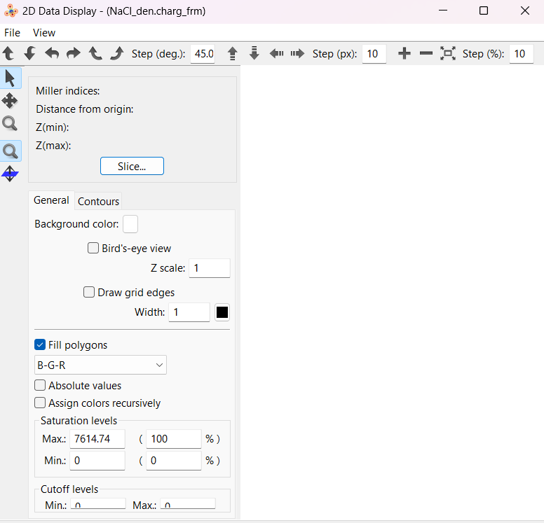
在那里，点击 Slice - 这将打开另一个窗口
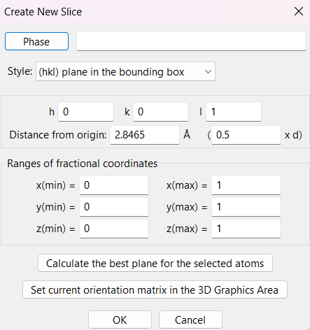
你应该保持 hkl （晶格米勒指数）作为 001，但制作一个2x2超胞并更改 x(min), y(min) 并且 z(min) 到 -1.
点击 Ok 你应该得到如下形式的输出：
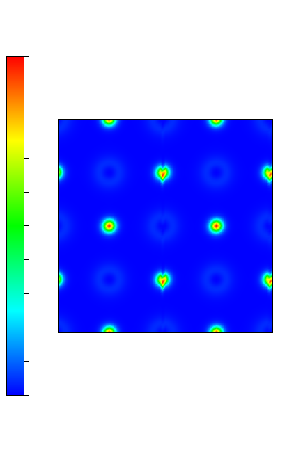
这是我们对离子晶体中电荷密度的预期：一种规则的模式，其中电子密度较低的区域（阳离子）与电子密度较高的区域（阴离子）相邻。
现在让我们遵循完全相同的步骤，只不过这次使用 NaCl_elf 关于ELF结果。这是结果：
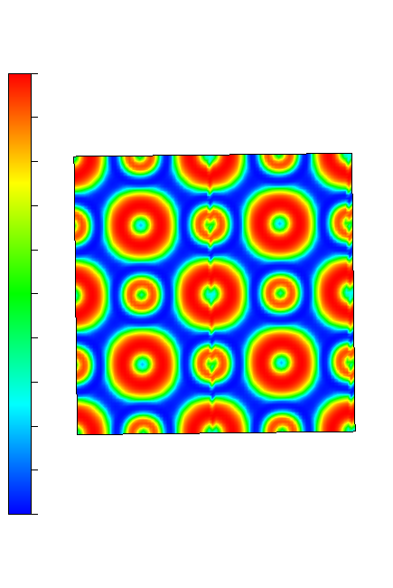
这相当有趣：尽管钠原子周围的电子密度+ 阳离子的价电子非常少，电子更集中在它周围——对于氯离子则相反。- ：当密度低时，电子局域化函数（ELF）较高，反之亦然。在最简单的模型中，两者都具有完整的外层壳层，因此理论上应都高度局域化（事实上它们确实都是局域化的，Na+ （只是更多如此），Cl- 仅仅是因为其轨道更大且具有完整的价层（而非核心层），导致电子局域性较低。这一点有助于说明ELF与布居分析之间的关键区别：ELF纯粹是衡量电子在空间中局域化的程度，而不一定对应于更高的电子密度。
共价键合 - 硅
我们现在将使用ELF来演示金刚石-硅中的共价键合。我们将使用 cell 文件
Si.cell
%block lattice_abc
3.8 3.8 3.8
60 60 60
%endblock lattice_abc
%block positions_frac
Si 0.00 0.00 0.00
Si 0.25 0.25 0.25
%endblock positions_frac
使用与之完全相同的 castep 运行程序 param 文件（您可以删除） WRITE_FORMATTED_DENSITY : TRUE 如果不行，那么你对电荷密度不感兴趣）。遵循上述完全相同的步骤（尽管再次可以忽略所有与电荷密度相关的内容）。在 Vesta 中打开该文件后，不要进行切片操作，而是点击 Edit -> Lattice planes，这将打开下方窗口：
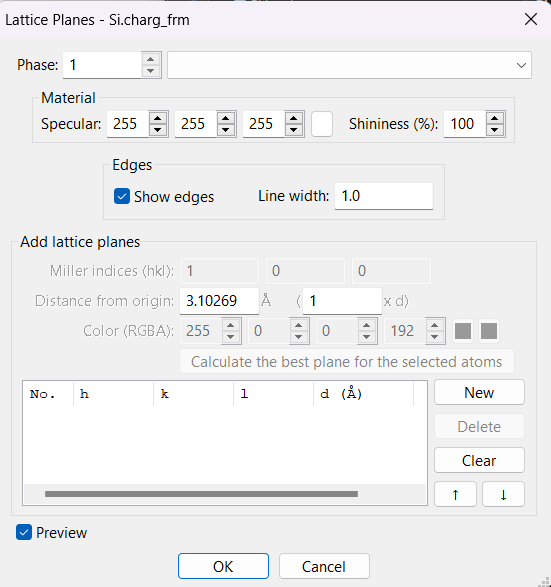
- 点击
New并使用100平面如前所述。 - 然后点击
Ok. - 创建一个超胞。
- 此时点击
Boundary...在主窗口的左侧。 - 如前所述，构建一个2x2超胞。
- 围绕细胞旋转，直到你看到发生了什么。
你应该看到类似这样的内容：
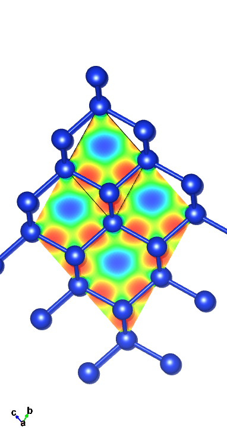
你可以取消勾选 Show models 为了更好地看到而不包含原子
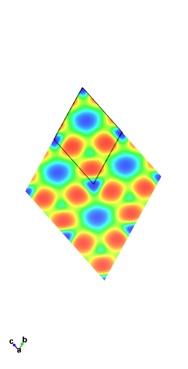
这告诉我们一个相当有趣的故事——原子沿着共价Si-Si键高度局域化，但在原子附近则相对地离域。它们在没有成键或原子存在的区域尤其表现出离域特性。
如果您希望进一步检查和比较电荷密度，相关内容见 另一个教程
HF
现在我们已经了解了ELF实际上做了什么，让我们用它来实现一个更有意思的目的：展示孤对电子和氢键。孤对电子本质上是高度局域化的，它们会相互配对，并由于与任何负电荷（包括其他孤对电子）之间的强烈排斥作用以及与正电荷之间的强烈吸引作用而被牢牢固定在原地（这导致了氢键的形成）。
对于HF我们将使用 cell 文件：
HF.cell
%block lattice_abc
6 6 6
90 90 90
%endblock lattice_abc
%block positions_abs
H 3 3 3
F 3.92 3 3
%endblock positions_abs
kpoints_mp_grid 4 4 4
param 文件。遵循与NaCl完全相同的步骤，切取(010)平面（将原点到该平面的距离设定在相同的切片窗口内，设为0.5d - 0.5倍的边长尺寸），我们得到如下输出：
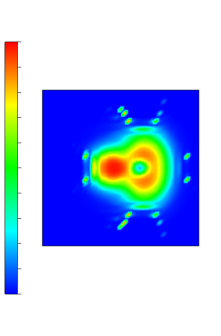
这给了我们一个有趣的图景：电子局域性较强的微小区域看起来正符合孤对电子的特征。氟原子周围有3个电子（如预期），而氢原子也有1个。考虑到该氢原子将与相邻单元格相互作用，而这在具有周期边界条件的计算中是不可避免的，这表明它很可能形成了一个氢键。
水和氨
H 的步骤2O 和 NH3 几乎完全相同。我们使用完全相同的 param 文件如上所述，并按照以下步骤执行相同的程序。 elf_fmt 输出。The cell 我们使用的文件是：
H2O.cell
%block lattice_abc
5 5 5
90 90 90
%endblock lattice_abc
%block positions_abs
O 2.5 2.5 2.5
H 2.5 1.95 3.29
H 2.5 1.95 1.72
%endblock positions_abs
用于水和
NH3.cell
%BLOCK LATTICE_ABC
8 8 8
90 90 90
%ENDBLOCK LATTICE_ABC
%BLOCK POSITIONS_ABS
N 4 4 4
H 4 4 5
H 4.95 4 3.67
H 3.53 3.18 3.67
%ENDBLOCK POSITIONS_ABS
对于氨。
从那时起，我们再次前往 2D display data 并且 Slice...。这一点上，操作步骤可能会略有不同：通过按住 Shift 键并点击所有氢原子2O（以及您希望查看的平面内的原子在NH中）3）并点击 Calculate the best plane for the selected atoms 它将给出我们可能最感兴趣的平面。在水的情况下，这是一个简单的(100)，但对于NH3 你可能希望尝试不同的组合进行探索——或者直接手动选择一个感兴趣的平面。
说明
在 VESTA 中，平面选择可能与你预期的有所不同。在此示例中，由于你是在中间进行切割，通常你会称之为 (200) 平面。然而，在这里它被视为 (10、0) 平面 2.5\mathring{\text{A}} （或 0.5d - 由于晶胞长度为 5）\mathring{\text{A}}) 来自原点
(100) 平面上水的结果应如下所示：
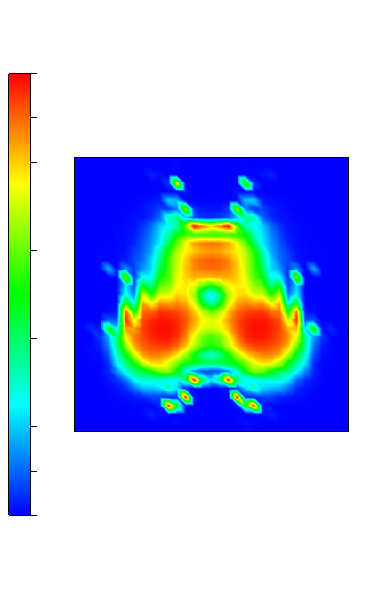
或者，为了更清楚地看到哪些键/原子对应于电子局域程度高的/低的区域，使用以下方法： Lattice planes 方法以便你可以看到晶胞以及ELF图谱。你可以再次 Calculate the best plane for the selected atoms 就像我们对氨分子进行切片处理一样。你可以自由选择不同的平面，观察其在这些平面上的显示效果。
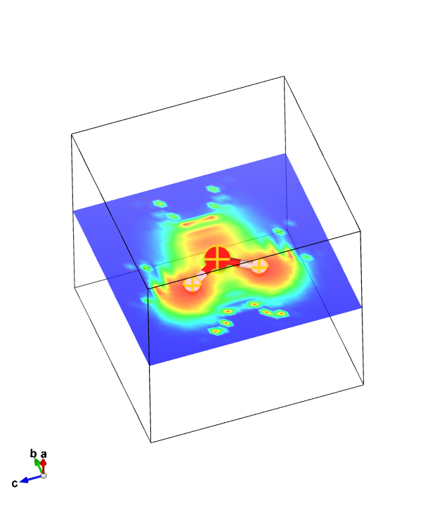
说明
别忘了你可以关闭 Show isosurfaces 并且 Show sections 在……之下 Volumetric data - 如果你要查看晶格本身，这可能会掩盖你想要观察的内容
最后，让我们快速看一下NH3 结果。选择包含2个氢原子和1个氮原子的最佳平面，应得到如下结果：
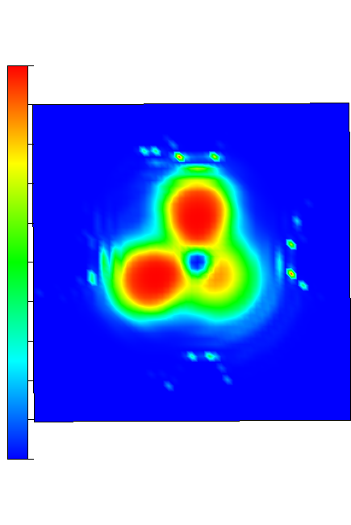
在这里我们看到平面内两个氢原子上都存在孤对电子的证据（因为这两个氢原子都能形成氢键——如果你观察第三个氢原子的话，它同样可以）。这一点相当出乎意料——在经典观点中，NH3 有一个氮原子带有1个孤对电子，它仅仅与相邻NH基团中的一个氢原子形成一个单氢键3然而，由于每个氢原子都具备形成氢键的能力，局域化电子密度（ELF）会在其附近记录到高局部性区域。氮原子同样如此——尽管经典理论认为它仅应有1对邻近的电子对，但因其在该平面上可形成两个氢键，因此被识别为具有两对邻近电子对。
注意
结果可能因选择的两个氢原子与氮原子的关系而异。这主要可以归因于相邻氨分子相对于它的取向，而该取向由晶胞决定。